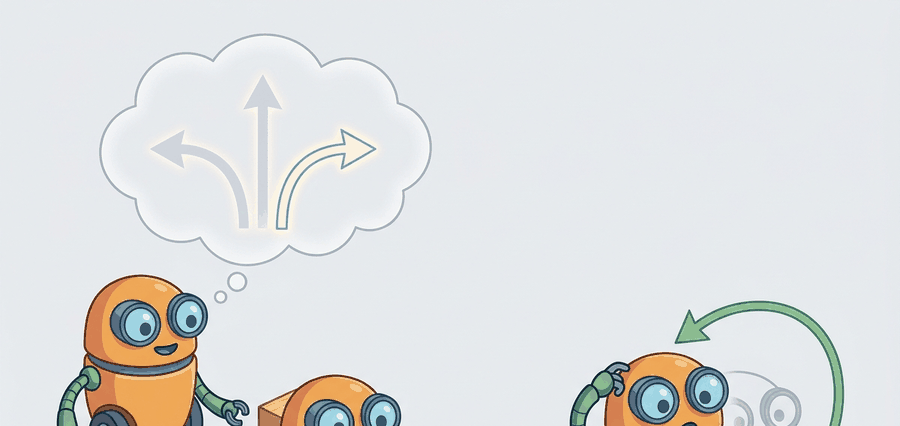

Stop learning to reverse a thousand noising steps; learn the straight-line velocity that carries noise to an action in one smooth flow.
A Flow-Matching Action Expert

This section assumes familiarity with the denoising formulation and DDPM training objective introduced in section 41.1, and with the Diffuser and Decision Diffuser architectures from section 41.2. The flow-matching action expert developed here is extended in section 41.4, where the same generator seeds synthetic scene rollouts for data augmentation. The scoring and feasibility-filter pattern recurs in Part 11 alongside collision-avoidance and safety constraints in section 54.2.
A robot arm reaches toward a cluttered shelf. In under 50 milliseconds it must not just pick a motion, but rank a hundred candidate trajectories, discard the ones that clip the coffee mug, and commit to the best feasible path before the window closes. Classical samplers were too slow; single-shot neural policies produced one answer with no fallback. Generative trajectory planning breaks that deadlock: a flow-matching model proposes a diverse batch of trajectories almost instantly, and a learned scorer selects the winner. This section develops both pieces, works through the composite scoring rule that balances reward, collision penalty, and dynamics fidelity, and shows why receding-horizon re-planning turns a one-shot sampler into a genuine closed-loop controller.
Diffusion learns to reverse a noising process step by step. Flow matching learns something simpler and often faster: a velocity field that transports a noise sample to a data sample along a smooth path, sampled by integrating an ordinary differential equation (ODE). For action generation this matters because the ODE can be integrated in a handful of steps, and the training target is a clean regression on velocity rather than on noise across a long schedule.
This section connects flow matching for action generation to the scoring problem that any generative planner must still solve. A flow-matching expert proposes actions cheaply; receding-horizon execution then scores and filters those proposals at every observation refresh rather than once at episode start.
A model earns its place only when it improves action. In Generative Trajectory Planning And Scoring, the reader should keep asking which decision changes, which uncertainty is exposed, and which failure mode becomes easier to diagnose.
Theory
Flow matching defines a time-indexed path $x_t$ for $t\in[0,1]$ that starts at a noise sample $x_0\sim\mathcal{N}(0,I)$ and ends at a data sample $x_1$ (an action or action chunk). A learned velocity field $v(x_t, t, c)$ generates the sample by integrating the ODE
$$ dx_t = v(x_t, t, c)\,dt, $$
from $t=0$ (noise) to $t=1$ (action), conditioned on context $c$. Conditional Flow Matching chooses the simplest possible path: a straight line between a paired noise sample and data sample, $x_t = (1-t)\,x_0 + t\,x_1$. Differentiating gives a constant target velocity $x_1 - x_0$, so the training objective is the regression
$$ \mathcal{L}_{\text{CFM}} = \mathbb{E}_{t, x_0, x_1}\left[\left\lVert v_\theta(x_t, t, c) - (x_1 - x_0)\right\rVert^2\right]. $$
This is markedly simpler than DDPM training: no noise schedule to tune, no variance terms, and straight-line paths that integrate accurately in few Euler steps. A Denoising Diffusion Probabilistic Model (DDPM) chain typically requires 100 denoising steps to produce one action; a flow-matching expert reaches the same quality in 4 to 10 steps, cutting inference latency by roughly 10 to 25x and making real-time replanning at 20 Hz feasible where it was not before (as of 2024).
Think of the learned velocity field as a river current that flows directly from a starting puddle (pure noise) to a precise destination pool (a valid action). A diffusion model is like a hiker who must consult a new compass reading at every step of a winding 100-step trail; flow matching is like a kayaker who reads the current once and is carried nearly straight to the destination in four or five strokes. The current (the velocity field) was shaped during training so the water always runs in the right direction, which is why so few integration steps are needed to arrive at a good action.
A single reward term is insufficient for embodied AI because a robot exists in a physical world where task success, collision avoidance, actuator limits, and execution time are genuinely separate concerns that can conflict. A trajectory that maximizes task reward may still break a joint limit, clip an obstacle, or demand torques the hardware cannot produce. On real hardware each failure mode carries a different cost: a collision can damage the robot or environment, while a dynamics mismatch causes the executed motion to diverge from the planned one, compounding error over subsequent steps. Multi-term scoring makes these trade-offs explicit and separately tunable instead of hoping a single learned reward captures every physical constraint.
Mechanically, scoring operates as a two-stage filter. First, the planner evaluates $R$, $C$, $D$, and $L$ independently for each of the $K$ candidates, weights each term by its $\lambda$, and sums them to produce a scalar $S(\tau^{(k)})$. A signed-distance field or lightweight collision checker supplies $C$; the dynamics term $D$ compares predicted joint velocities against the robot's measured velocity limits; the effort term $L$ penalizes total path length or time. Second, a hard feasibility gate discards any candidate whose $C$ exceeds threshold $\epsilon$, regardless of its overall score. A high reward never overrides a safety constraint. The planner ranks the surviving candidates by $S$ and executes the top one.
When tuning the composite scorer $S(\tau) = \lambda_r R - \lambda_c C - \lambda_d D - \lambda_\ell L$, normalize each term to a common scale before setting the $\lambda$ weights. A collision penalty $C$ expressed in raw meters and a task reward $R$ in $[0,1]$ will let $C$ dominate by orders of magnitude, causing the feasibility filter to reject every proposal even for a clear path. A practical fix: divide each term by its empirical standard deviation over a small held-out rollout set, then tune the $\lambda$ values; this keeps no single component from silently collapsing the candidate set.
Algorithm: Flow-Matching Generative Trajectory Planning and Scoring
Input: observation context $c$, trained velocity network $v_\theta$, number of candidates $K$, ODE steps $N$, scorer weights $\lambda_r, \lambda_c, \lambda_d, \lambda_\ell$, feasibility threshold $\epsilon$
Output: best feasible action chunk $\tau^*$
- For $k = 1, \ldots, K$: sample initial noise $x_0^{(k)} \sim \mathcal{N}(0, I)$.
- Set step size $\Delta t = 1/N$ and initialize $x \leftarrow x_0^{(k)}$.
- For each Euler step $n = 0, \ldots, N-1$: compute $t = n \cdot \Delta t$, evaluate the velocity $\hat{v} = v_\theta(x, t, c)$, and update $x \leftarrow x + \hat{v} \cdot \Delta t$.
- Store the integrated action chunk $\tau^{(k)} \leftarrow x$ after $N$ steps.
- Repeat steps 2 through 4 for all $K$ candidates to obtain the proposal set $\{\tau^{(1)}, \ldots, \tau^{(K)}\}$.
- For each candidate $\tau^{(k)}$, evaluate the composite score $S(\tau^{(k)}) = \lambda_r R(\tau^{(k)}) - \lambda_c C(\tau^{(k)}) - \lambda_d D(\tau^{(k)}) - \lambda_\ell L(\tau^{(k)})$.
- Apply the feasibility filter: discard any $\tau^{(k)}$ for which the constraint penalty $C(\tau^{(k)}) > \epsilon$.
- Among the remaining candidates, select $\tau^* = \arg\max_k S(\tau^{(k)})$.
- Execute the first action from $\tau^*$ in the environment and observe the next state.
- At the next control cycle, update context $c$ with the new observation and repeat from step 1 (receding-horizon execution).
At inference, draw $x_0$ from a Gaussian, then take a few Euler steps $x \mathrel{+}= v_\theta(x, t, c)\,\Delta t$ from $t=0$ to $t=1$. Because the trained path is nearly straight, even 4 to 10 steps land close to a valid action, which is why flow-matching action experts can hit higher control rates than long DDPM chains.
Worked Example
The probe below shows a flow-matching forward pass and a few-step ODE integration. We interpolate linearly between a noise sample $x_0$ and a target action $x_1$, read off the constant target velocity $x_1 - x_0$, then integrate the ODE from noise to action with a handful of Euler steps. In a trained system the constant velocity is replaced by the learned field $v_\theta(x_t, t, c)$, but the path geometry and the integration loop are identical.
# Conditional flow matching: straight-line path from noise to action.
# x_t = (1 - t) x0 + t x1 ; target velocity v = x1 - x0 (constant along the line).
import numpy as np
rng = np.random.default_rng(2)
x1 = np.array([1.0, 0.0]) # target action (data sample)
x0 = rng.normal(size=2) # noise sample
print("forward path and target velocity:")
for t in np.linspace(0.0, 1.0, 6):
x_t = (1.0 - t) * x0 + t * x1 # point on the path at time t
v = x1 - x0 # CFM regression target
print(f" t={t:.1f} x_t={x_t.round(3).tolist()} v={v.round(3).tolist()}")
# Inference: integrate dx = v dt from t=0 (noise) to t=1 (action) with Euler steps.
x = x0.copy()
dt = 0.2
for _ in range(5):
v_theta = x1 - x0 # a trained v_theta(x, t, c) would go here
x = x + v_theta * dt
print("integrated endpoint:", x.round(3).tolist(), " target:", x1.tolist())forward path and target velocity:
t=0.0 x_t=[0.189, -0.523] v=[0.811, 0.523]
t=0.2 x_t=[0.351, -0.418] v=[0.811, 0.523]
t=0.4 x_t=[0.513, -0.314] v=[0.811, 0.523]
t=0.6 x_t=[0.676, -0.209] v=[0.811, 0.523]
t=0.8 x_t=[0.838, -0.105] v=[0.811, 0.523]
t=1.0 x_t=[1.0, 0.0] v=[0.811, 0.523]
integrated endpoint: [1.0, -0.0] target: [1.0, 0.0]The velocity is constant along the straight path, which is the whole appeal: the network only has to regress a stable target, and five Euler steps reach the action exactly. Replace the constant velocity with $v_\theta(x_t, t, c)$ and the same loop becomes a real action sampler. This is the same mechanism behind flow matching for actions in imitation learning. The proposed action still enters the scoring stack, so raw proximity to a target is never the final word: an embodied planner only commits once feasibility and effort penalties agree.
For Generative trajectory planning and scoring, the hand-built probe exposes the planning assumption; Diffuser-style or Decision-Diffuser-style tooling should preserve the same logging and evaluation fields.
Practical Recipe
- Fix the observation representation before training: for a Franka Panda wrist-camera setup, concatenate the 84x84 RGB crop, the 7-DOF joint positions, and the 6-DOF end-effector pose into a single context vector $c$. Feeding raw pixel tensors without cropping inflates the flow-matching regression loss and slows convergence by 2 to 3x in practice.
- Set $K$ (candidate count) relative to your control-loop budget. At 20 Hz on a Jetson AGX Orin, generating $K=64$ candidates with 8 Euler steps fits within the 50 ms window; at 10 Hz (common for mobile-manipulation bases) you can afford $K=128$. Profile on the actual inference hardware before committing to a candidate budget in training configurations.
- Normalize the composite scorer before tuning $\lambda$ weights. Collision penalty $C$ derived from a signed-distance field is typically in meters (range 0 to 0.5 for a cluttered table), while task reward $R$ from a binary success signal sits in $\{0, 1\}$. Divide each term by its standard deviation over 200 rollouts from the Open X-Embodiment Bridge dataset split; only then tune the $\lambda$ ratios.
- Run the full proposal-score-filter cycle on one recorded episode from the RT-X dataset before any live robot trial. Log the candidate set, per-candidate scores, and the feasibility filter outcome as a single JSON artifact per episode. A planner that rejects all candidates on the logged episode will do the same on hardware.
- Before trusting real-robot results, inject one contact perturbation: shift the target object 3 cm laterally from its nominal pose. A flow-matching expert trained on Diffusion Policy-style demonstrations should still produce a feasible candidate in at least 80 percent of trials; drop below that and the scorer is likely rejecting good plans due to a miscalibrated collision penalty threshold $\epsilon$.
Two failure modes dominate in practice. First, using too few ODE integration steps (fewer than 4 for a curved velocity field) causes the Euler integration to cut corners and land off the action manifold, producing physically implausible poses even when the model is otherwise well-trained. Second, scorer-generator misalignment: a flow-matching expert trained on imitation data is blind to collision costs and orientation constraints that the scoring function enforces at runtime. When these penalties are strong, the scorer rejects nearly every proposal, leaving the planner stuck; the fix is to incorporate at least a lightweight collision signal during fine-tuning or to widen the sample budget until feasible candidates appear reliably.
A mobile manipulator navigating a tight aisle samples trajectories that all reach the target shelf. The decisive difference is scoring: some plans arrive with poor final orientation, some violate forklift-clearance margins, and some demand steering curvature the base cannot track. Generative planning only becomes useful once those penalties are part of the scoring stack, not added after the fact.
Sampling proposes the future, scoring negotiates with reality.
Black et al., "pi_0: A Vision-Language-Action Flow Model for General Robot Control" (2024). pi_0 pairs a vision-language model (VLM) backbone with a flow-matching action expert, so high-level perception and instruction-following come from the VLM while continuous actions are generated by integrating a learned velocity field. A single model is trained across many manipulation embodiments and tasks, then fine-tuned to specific robots. The design point worth absorbing: flow matching is the action decoder that makes high-rate continuous control compatible with a large pretrained semantic backbone, because few-step ODE integration is cheap enough to run in the control loop.
Direction 1: Classifier-free and value-guided flow matching for robotics. Rather than scoring a batch of proposals post-hoc, recent work injects reward or value signals directly into the ODE integration so the velocity field itself steers toward high-return regions. Black et al. (Physical Intelligence, pi0.5, 2025) extend this approach to dexterous whole-body tasks, using VLM-derived value estimates as classifier-free guidance weights on the action flow. The open design question is whether guidance gradients can be computed cheaply enough to update the trajectory mid-integration without blowing the control-loop budget.
Direction 2: Consistency-model action experts for sub-millisecond generation. Consistency models (Song et al., OpenAI, 2023) collapse multi-step ODE integration into a single-step mapping by training the model to be self-consistent along the probability flow. Applied to robot action generation (CM-Policy, Kim et al., 2024), a single forward pass replaces the 4-to-10 Euler steps of flow matching, cutting per-candidate latency by another 4x and enabling candidate budgets above 512 at 20 Hz on edge hardware. The challenge is maintaining trajectory diversity when the generator collapses to a near-deterministic map.
Direction 3: Diffusion-as-search with learned feasibility critics. GROOT (Wan et al., Stanford IRIS Lab, 2024) and related work train a separate neural feasibility critic jointly with the generative planner; the critic provides a soft rejection signal during sampling, so infeasible trajectories are suppressed before the hard geometric filter sees them. This tightens the gap between the generator's training distribution and the deployment constraint set without retraining the generator from scratch.
Open problem for a PhD student: All three directions above maintain a strict separation between the generator (trained offline on demonstrations) and the scorer or critic (evaluated at runtime). The open problem is online adaptation: when a robot encounters a novel object geometry or an out-of-distribution contact scenario, the generator's velocity field is stale and the critic's feasibility boundary may be wrong simultaneously. Designing a lightweight update rule that corrects both, with only the observations available in the current episode and without catastrophic forgetting of prior skills, remains unsolved as of 2025 and is tractable for a focused dissertation.
For Generative trajectory planning and scoring, connect diffusion-policy tooling, Model Predictive Control (MPC) baselines, and safety constraints by recording the planner input, sampled plan, feasibility check, and executed action.
Can you state the observation, state estimate, action, prediction horizon, success metric, and most likely failure mode for Generative trajectory planning and scoring? If not, the system boundary is still too vague.
The right mental model is propose, score, then commit. Let the generator provide diversity, then use fast learned scorers and hard geometric checks to remove plans that are dynamically or spatially impossible. This usually beats asking the diffusion model alone to internalize every safety rule.
That is also the cleanest architectural pattern. A reader can inspect the sampled plans, the scorer output, and the feasibility filter separately, which makes failure attribution far less mysterious than treating the planner as a single opaque block.
| Tool or Library | Role in This Topic | Builder Advice |
|---|---|---|
| Diffuser | Supports trajectory denoising, conditional planning, synthetic experience, and generated-action risk control. | Use it after the from-scratch probe states the same observation, action, metric, and failure tag. |
| Decision Diffuser | Supports trajectory denoising, conditional planning, synthetic experience, and generated-action risk control. | Use it after the from-scratch probe states the same observation, action, metric, and failure tag. |
| Diffusion Policy | Supports trajectory denoising, conditional planning, synthetic experience, and generated-action risk control. | Use it after the from-scratch probe states the same observation, action, metric, and failure tag. |
| PyTorch | Supports trajectory denoising, conditional planning, synthetic experience, and generated-action risk control. | Use it after the from-scratch probe states the same observation, action, metric, and failure tag. |
| Gymnasium | Supports trajectory denoising, conditional planning, synthetic experience, and generated-action risk control. | Use it after the from-scratch probe states the same observation, action, metric, and failure tag. |
For Generative trajectory planning and scoring, keep one inspectable probe for the model assumption, then use maintained libraries without changing the artifact schema used for baseline comparison.
- Write the observation, action, state estimate, success metric, and rejection criterion.
- Run a deterministic smoke test on one seed and save the complete configuration.
- Add one perturbation tied to the section topic: delay, noise, horizon length, contact change, distractor object, or generated-scene shift.
- Compare only methods evaluated by the same script, split, seed panel, and metric definition.
- Record a postmortem that assigns failures to perception, representation, dynamics, planning, control, data coverage, timing, or evaluation.
When Generative trajectory planning and scoring fails, do not collapse the result into a single method verdict. Assign the failure to the interface that broke, rerun one controlled perturbation, and keep the trace next to the metric. That habit turns a disappointing rollout into a reusable diagnostic asset.
A common assumption is that the flow-matching generator itself selects the best trajectory, treating scoring as a post-processing refinement that can be skipped or approximated loosely. This is wrong in embodied AI: the generator is trained only to produce actions that resemble the training distribution, with no knowledge of collision geometry, actuator limits, or task-specific reward at deployment time. In a physical robot setting, a generated trajectory can be dynamically plausible yet still clip an obstacle or violate a joint limit, and the generator has no mechanism to detect this. The correct mental model separates responsibility cleanly: the generator supplies diversity across the candidate set, and the scorer together with the hard feasibility filter jointly determine which candidate is actually safe and task-relevant to execute.
Generative Trajectory Planning And Scoring is useful when it improves a measured closed-loop decision, exposes its uncertainty, and leaves behind an artifact that another reader can replay.
Design a minimal experiment for Generative trajectory planning and scoring. Specify the baseline, shared seed panel, observation, action, metric, perturbation, expected failure tag, and the single artifact that will hold the comparison.
Bibliography & Further Reading
Primary References And Tools
Janner, M. et al.. "Planning with Diffusion for Flexible Behavior Synthesis." (2022). https://arxiv.org/abs/2205.09991
Diffuser is the core trajectory-denoising reference for planning. It shows how sampling and conditioning can replace a hand-designed optimizer in some offline decision problems.
Ajay, A. et al.. "Is Conditional Generative Modeling All You Need for Decision Making." (2022). https://arxiv.org/abs/2211.15657
Decision Diffuser frames decision making as conditional generation. It is useful for comparing return conditioning, goal conditioning, and trajectory feasibility.
Chi, C. et al.. "Diffusion Policy: Visuomotor Policy Learning via Action Diffusion." (2023). https://arxiv.org/abs/2303.04137
Diffusion Policy is the practical robotics anchor for action diffusion. It helps readers connect planning-style denoising with continuous robot control from visual observations.
Lipman, Y. et al.. "Flow Matching for Generative Modeling." (2022). https://arxiv.org/abs/2210.02747
Introduces conditional flow matching and straight-line probability paths. It is the methodological basis for treating action generation as ODE integration of a learned velocity field.
Black, K. et al.. "pi_0: A Vision-Language-Action Flow Model for General Robot Control." (2024). https://arxiv.org/abs/2410.24164
pi_0 combines a VLM backbone with a flow-matching action expert across manipulation embodiments. It is the anchor for flow-matching action generation at the scale of general-purpose robot control.
Huang, Z. et al.. "DiffuserLite: Towards Real-Time Diffusion Planning." (2024). https://arxiv.org/abs/2401.15443
DiffuserLite focuses on planning frequency and sample efficiency. It is relevant whenever a diffusion planner must fit into a real control loop rather than an offline demonstration.
Yang, R. et al.. "What Makes a Good Diffusion Planner for Decision Making." (2025). https://arxiv.org/abs/2503.00535
This large empirical study examines design choices in diffusion planning. It is a useful guardrail against treating denoising as a universal planner without checking architecture, guidance, and evaluation details.
Project Ideas
Beginner (weekend): Flow-matching action sampler in Gymnasium. Implement a minimal conditional flow-matching model in PyTorch that generates 2D navigation trajectories for the Gymnasium LunarLander-v2 environment; train on 1,000 recorded episodes, then plug in the composite scorer to rank 32 candidates per step. The key challenge is normalizing the four scoring terms (reward, collision, dynamics, length) to a common scale so the feasibility filter does not reject every proposal.
Intermediate (1 to 2 weeks): Receding-horizon diffusion planner for tabletop manipulation in MuJoCo. Build a receding-horizon controller around a Diffusion Policy checkpoint (LeRobot or the official Diffusion Policy repo) running on a simulated Franka Panda in MuJoCo; at each 50 ms control tick, sample 64 action chunks with 8 Euler steps, score them with a signed-distance-field collision checker, and execute only the first action before replanning. The key challenge is keeping the full propose-score-filter cycle within the control-loop budget while the signed-distance-field query dominates latency.